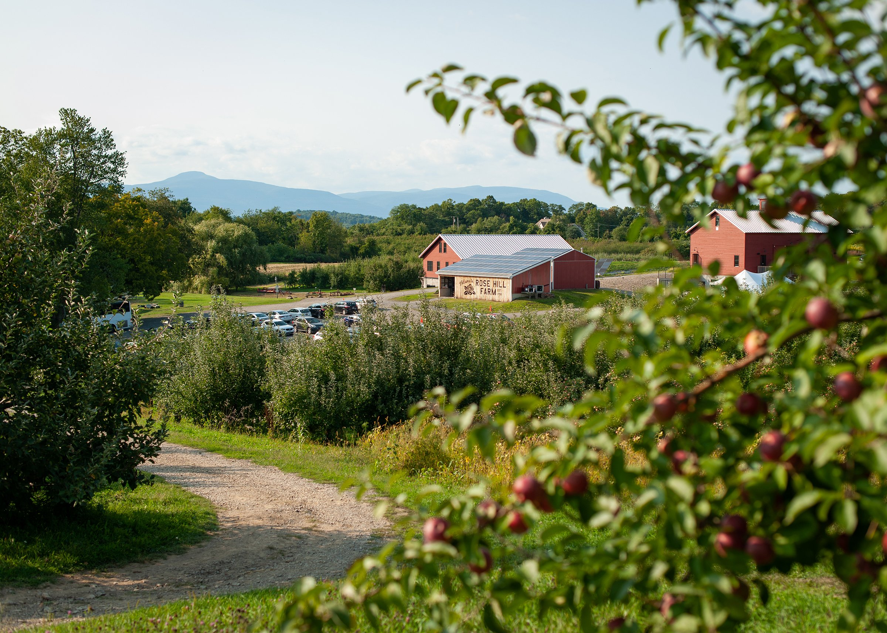

Our Story
The blueberry farm named "Blues Berries" has an interesting origin story. The farm was founded by a man named Jack Blue, who had a passion for blueberries and a dream of starting his own farm.
Jack grew up on a small family farm, where he learned the ins and outs of farming and developed a love for the land. As he got older, he became particularly interested in blueberries and began experimenting with different varieties in his own backyard.
After several successful seasons, Jack decided to turn his hobby into a full-time business. He scoured the countryside for the perfect piece of land to start his blueberry farm, eventually settling on a picturesque plot nestled in the rolling hills of rural America.
Jack named his farm "Blues Berries" in honor of his love for the fruit and his passion for the blues music that he often listened to while working on the farm.
With hard work and determination, Jack was able to turn his small blueberry patch into a thriving farm. He carefully tended to his crops, ensuring that they received the proper care and attention needed to produce the highest quality blueberries.
Over time, the farm grew and expanded, and Jack's blueberries became known for their delicious taste and exceptional quality. Today, Blues Berries is a well-respected and successful farm, and Jack's dream of owning his own blueberry farm has become a reality.
Despite its success, Blues Berries remains true to its roots, with a focus on sustainable farming practices and a commitment to providing the freshest and most delicious blueberries to customers.
As the farm continues to grow and thrive, it serves as a testament to the hard work and passion of its founder, Jack Blue, and his love for blueberries and the land.
Hours at a Glance
Monday 8am- 6pm
Tuesday 8am- 6pm
Wednesday 8am- 6pm
Thursday 8am- 6pm
Friday 8am- 10pm
Saturday 6am- 10pm
Sunday 10am- 3pm
FAQ's
Where to Park
What Hours?
How expensive?
bathrooms?